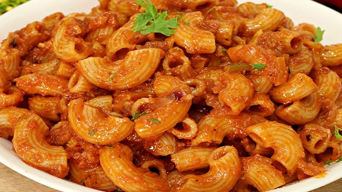

Homepage
Macaroni Pasta
Macaroni is one of the easiest dishes to cook ever, although most people know how to make macaroni, I'm going to explain it anyways.
Here are the ingredients you should have:
- Macaroni
- Pot
- Water
- Salt
- Fried tomato sauce
- Grated cheese
Now let's go to the cooking part:
- First, take a pot and fill it with water
- Put the pot on the stove and let it heat
- Once the water is boiling, add the macaroni
- Let it cook at least for 8 minutes
- Once the macaroni is cooked, take it out of the pot and put it on a plate
- Add the fried tomato sauce and the grated cheese as well as some mushrooms, sausage and marjoram if you like
- Stir it all together and you are ready to eat
There you go, a delicious plate that took you less than 15 minutes
